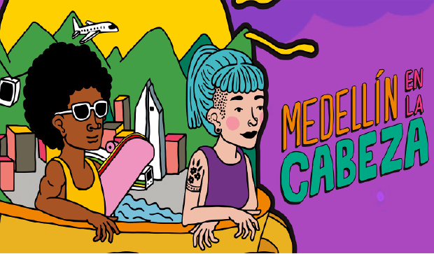

Home
10% de descuento en venta general con tarjeta de crédito + beneficios exclusivos para asistentes internacionales.
Venta general
Combo 2 días VIP
13 de octubre, 2025 · 10:00 a.m
Venta general
Días individuales general
13 de octubre, 2025 · 10:00 a.m
Venta general
Días individuales general VIP
13 de octubre, 2025 · 10:00 a.m
Venta general
Días individuales menores
13 de octubre, 2025 · 10:00 a.m
Medallo Sound ’25 no es solo un parche: es energía, cultura y gente de todas partes vibrando al mismo ritmo. Este noviembre, Medellín abre sus puertas al planeta para encontrarnos entre sonidos, colores y experiencias que nos hacen sentir parte de algo más grande: una comunidad diversa, libre y vibrante.
Dos días para conectar y vivir la música al máximo, romper la rutina y hacer historia juntxs el 15 y 16 de noviembre de 2025.
